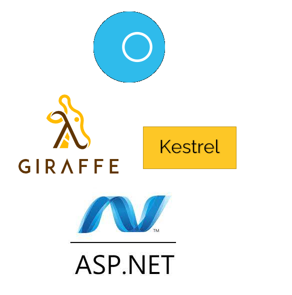

Saturn is a web development framework written in F# which implements the server-side MVC pattern.
https://saturnframework.org/explanations/overview.html https://saturnframework.org/

open Saturn
open Giraffe
let endpoints =
router { get "/" (text "Hello World from Saturn") }
let app =
application {
url ("https://localhost:5000")
use_router endpoints
}
run app
dotnet new console -lang "F#"dotnet add package Saturnopen Saturn
open Giraffe
let endpoints =
router { get "/" (text "Hello World from Saturn") }
//Change the text function in endpoints to either xml or json.
let app =
application {
url ("https://localhost:5000")
use_router endpoints
}
run app
let app =
application {
url ("https://localhost:5000")
use_router endpoints
memory_cache
use_static "public"
use_gzip
}
https://github.com/SaturnFramework/Saturn/blob/master/src/Saturn/Application.fs https://docs.microsoft.com/en-us/aspnet/core/performance/caching/memory?view=aspnetcore-6.0
let getProductById (productId: int64) =
let a = (sprintf "Hello my id is %d" productId)
text a
let routes =
router {
get "/" (text "Hello from Saturn!")
getf "/%d" getProductById
//post、delete、put、postf...
}
let publicApi =
router { get "/" (text "This is publicApi") }
let routes = router { forward "/public" publicApi }
{ }{ }let resource = controller {
index indexAction
show showAction
add addAction
edit editAction
create createAction
update updateAction
patch patchAction
delete deleteAction
deleteAll deleteAllAction
}
index — mapped into GET request at / endpoint. Usually used to render a view displaying list of items, or return whole list of items.show — mapped into GET request at /:id endpoint. Usually used to render a view displaying details of particular item, or return single item with given id.create — mapped into POST request at / endpoint. Used to create and save new item.update — mapped into POST and PUT requests at /:id endpoint. Used to update existing item. Usually replaces original item (keeping id), and requires are fields to be filled in the incoming item.delete — mapped into DELETE request at /:id endpoint. Used to delete or deactivate existing item.deleteAll — mapped into DELETE request at / endpoint. Used to delete or deactivate all items.https://medium.com/lambda-factory/magic-of-saturn-controllers-bafbc46d485f
module Fuber.Routes
open Giraffe
open Saturn
type Profile = { Username: string }
let getProfile next ctx =
let profile = { Username = "JW" }
json profile next ctx
// next ctx //return this , pipeline will return getProfile2 result
// never run
let getProfile2 next ctx =
let profile = { Username = "QQ" }
json profile next ctx
let setMyHeader = setHttpHeader "myCustomHeader" "abcd"
let headerPipe =
pipeline {
plug setMyHeader
plug getProfile
plug getProfile2 // never run because getProfile get something, if getProfile return None, pipeline will continue.
}
let apiRouter = router { get "/profile" headerPipe }
let router = router { forward "/api" apiRouter }
let app =
application {
url "http://0.0.0.0:8080/"
use_router router
memory_cache
use_static "content"
use_gzip
}
run app
https://safe-stack.github.io/docs/component-saturn/ https://docs.microsoft.com/zh-tw/aspnet/core/fundamentals/servers/kestrel?view=aspnetcore-6.0